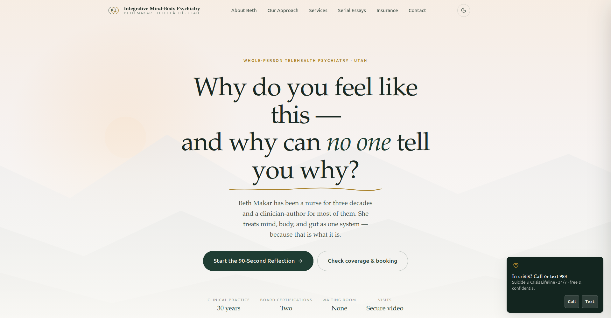
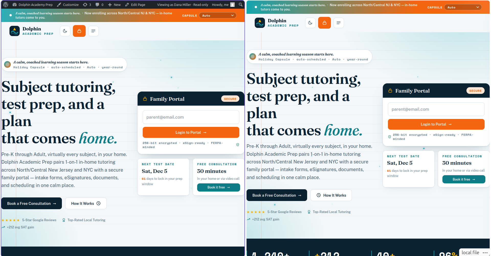

A prototype is not a spec. A prototype is a proposal. The pipeline treats it as one — extracting its structure, modeling its content, and producing a production WordPress theme with structured editing surfaces.
Phase 1 — Extract. parse_prototype.py reads the SPA's HTML, CSS, and JavaScript
and emits structured JSON: the DOM tree, the CSS rule map, the JS function map, and the repeater patterns.
An
LLM inference pass converts the DOM tree into a section map — which nodes form which components.
route_css.py then computes which CSS rules serve which components.
Phase 2 — Model & Build. The section map drives CPT registration with typed Carbon Fields, a Twig component library, per-component CSS and JavaScript, and the global assets — design tokens and the cross-component event bus.
Phase 3 — Seed & Deploy. The prototype's own JavaScript arrays become
wp_insert_post() calls. WordPress pages and templates are created, the event bus is wired, and
E2E validation runs 32 deterministic assertions before anything ships.
WordPress (CMS target) · Timber/Twig (templating) · Carbon Fields (typed content modeling) · Python (deterministic extraction and routing scripts) · LLM (inference layer: section mapping, classification, component generation) · HTML/CSS/JS (SPA source) · Git (version control)
| AI Handles (Inference) | Code Handles (Deterministic) |
|---|---|
| Section boundary detection — is the hero one component or two? | HTML/CSS/JS parsing — 878 DOM nodes, 588 CSS rules, 84 JS functions |
| CSS routing — which rules belong to which component? | CSS rule matching against DOM nodes — 15,000 checks in milliseconds |
| Component naming — "Method Ledger," "Testimonial Rotator" | CPT registration — register_post_type() with typed Carbon Fields |
| Control suggestions — TEXT vs TEXTAREA vs REPEATER | CSS routing config generation — mathematical, no inference needed |
| Data array classification — CPT vs Theme Options vs Excluded | Seed data extraction — JSON arrays → wp_insert_post() calls |
Twig template generation — HTML → {% for %} loops |
E2E validation — 32/32 tests, deterministic assertions |
AI does semantic reasoning where the answer isn't mechanical. Code does everything where the answer is computable. Neither layer is optional. The split is deliberate.

| Dolphin Academic Prep | Psych Practice | Portfolio | |
|---|---|---|---|
| Industry | Tutoring & test prep | Telehealth psychiatry | Personal brand |
| Pages | 10 | 9 | 5 |
| CPTs | 4 | 4 | 5 |
| Distinctive Feature | Booking engine | Circadian ambient shifts | Self-drawing SVG |
| Compliance | FERPA-minded, AES-256 | HIPAA-compliant | WCAG 2.1 AA |
| CSS Rules | 588 → 37 components | 485 → 42 components | 252 → 23 components |
Same pipeline, different outputs. The pipeline doesn't care about the industry, the design system, or the compliance requirements. It extracts whatever it finds.

The Dolphin Academic Prep prototype was a single index.html file — 3,000 lines of HTML, 2,000 lines of CSS, 1,500 lines of JavaScript. The pipeline extracted its structure into a section map with 37 components across 10 pages. It registered 4 custom post types with Carbon Fields. It generated 30+ Twig components. It routed 588 CSS rules to their correct components. It seeded the database from the prototype's own JS arrays. The production site is not a rebuild of the prototype. It IS the prototype — structured, editable, and running on WordPress.
| Manual Process | Pipeline Process |
|---|---|
| Read prototype, manually identify sections | parse_prototype.py extracts DOM tree with 878 nodes in <1 second |
| Manually register CPTs and fields | AI classifies data arrays → CPT + Carbon Fields registration |
| Manually build Twig templates for each component | AI generates 30+ components from section map + DOM tree |
| Manually extract and scope CSS per component | route_css.py routes 588 rules to 37 components deterministically |
| Manually seed sample data | Python script extracts JS arrays → wp_insert_post() calls |
| Prototype → production: 3–4 weeks per project | Prototype → production: 1 pipeline conversation per project |
The pipeline doesn't replace the developer. It replaces the mechanical work — the parsing, the routing, the seeding — so the developer can focus on architecture, edge cases, and polish.